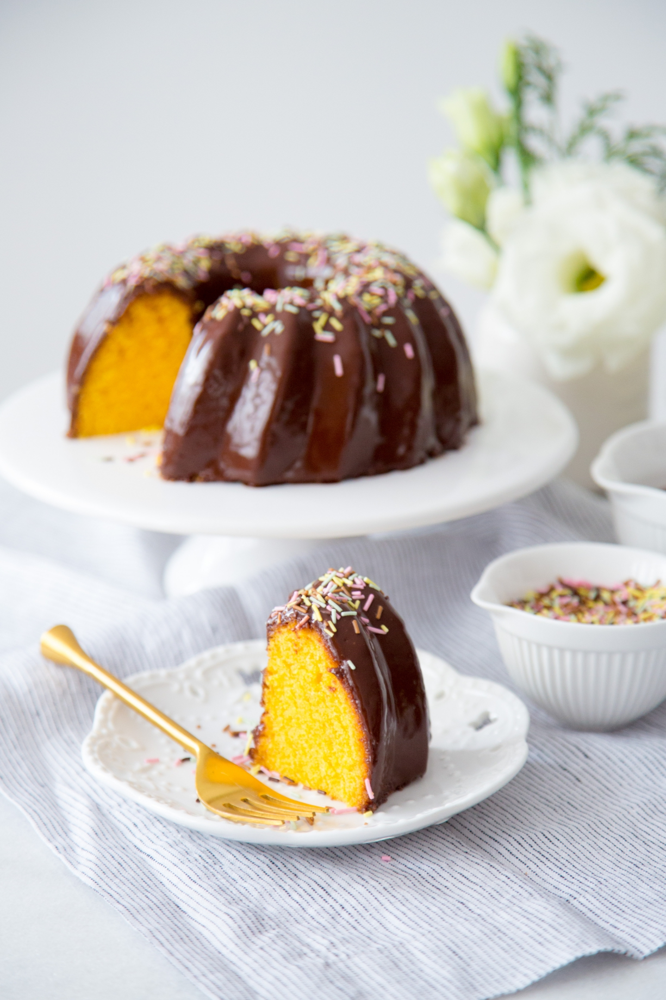

Como fazer bolo de cenoura com chocolate
INGREDIENTES
3 cenouras médias descascadas e picadas (cerca de 270g) 3 ovos 1 xícara de óleo 2 xícaras de açúcar 2 xícaras de farinha de trigo 1 colher de sopa de fermento químico em pó 1 pitada de sal MODO DE PREPARO Pré-aqueça o forno a 180°C e unte uma forma com manteiga e farinha. Bata os líquidos: No liquidificador, coloque as cenouras, os ovos, o óleo e o açúcar. Bata por cerca de 3 minutos até ficar bem liso. Misture os secos: Em uma tigela grande, coloque a farinha de trigo, o sal e o fermento. Junte tudo: Despeje a mistura do liquidificador na tigela com os secos. Mexa delicadamente com um batedor (fouet) ou espátula até incorporar. Asse: Coloque a massa na forma preparada e leve ao forno por aproximadamente 40 minutos. Faça o teste do palito antes de tirar.

O cuidade com o patrimônio da escola é responsabilidade
de todos os estudantes e funcionários, os bens duráveis são importantes para o desenvolvimento
dos estudantes e gera um ambiente melhor para todos os envolvidos.